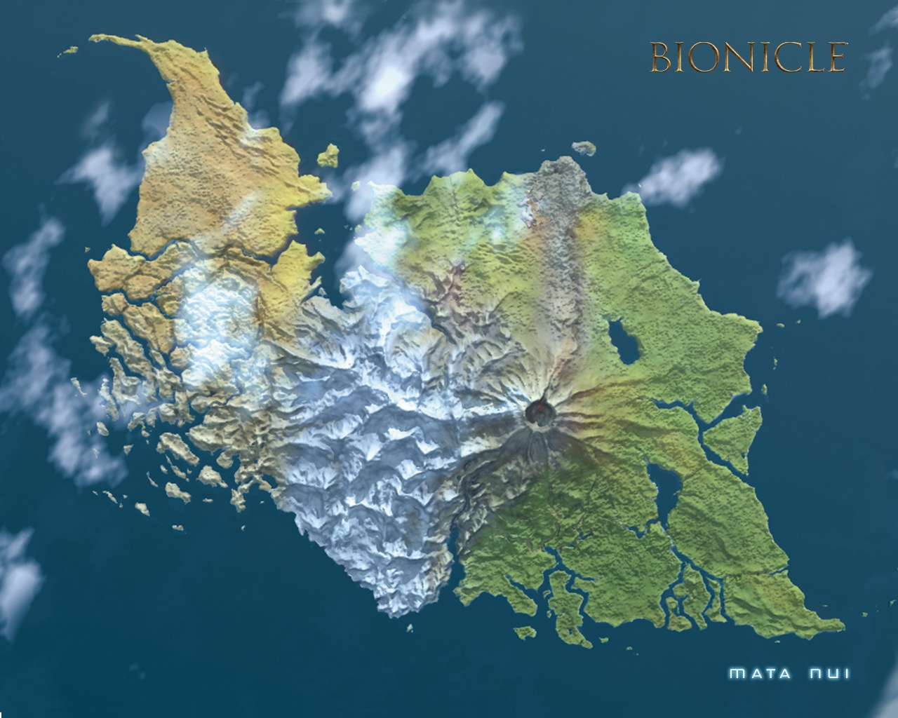
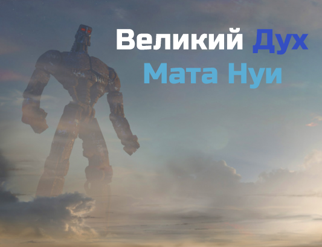

Остров Мата Нуи

Происхождение Мата Нуи началось с Великого Духа, в честь которого он был назван. Обязанностью
Великого Духа было наблюдение за другими мирами. Мата Нуи должен был приземлиться на планету и
скрыть свое лицо под камнем острова и местной флоры с помощью Энергетического Протодермиса.

Когда Макута Теридакс использовал Вирус Макуты, чтобы погрузить Великого Духа в глубокий сон, тот
разбился на Аква Магне. Внезапное приземление вызвало сбой в его камуфляжной системе, которое,
наряду с протечкой Энергетического Протодермиса, создало райский остров Мата Нуи.
Данный сайт является личным проектом и не преследует коммерческих целей. Он не спонсируется компанией LEGO и не связан с ней никаким образом. Официальный сайт компании Lego находится по адресу www.lego.com. LEGO®, BIONICLE® - это зарегистрированные торговые марки The LEGO Company. Копирование материалов с BionicleRu разрешено, ©2017 BionicleRu - Русскоязычный сайт о Биониклах. Если у вас есть предложения или вопросы, свяжитесь с администратором.